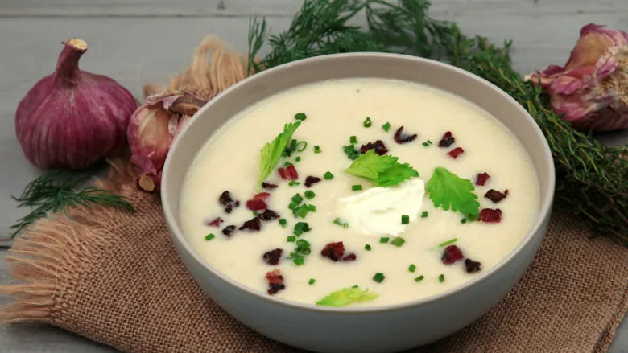

Recipes to make for pals, family and neighbours in winter
Hot or Cold Beet-Fennel Soup

We love a hearty meal that can warm us up when it’s snowy just as much as we crave light and fresh eats on sticky summer nights. But few recipes can satisfy in all
seasons like this beet and fennel soup from Dorie Greenspan’s cookbook Everyday Dorie. Made from a blend of humble vegetables and herbs, the versatile dish can be served
hot or cold, depending on where the weather (or your mood) guides you.
Be sure to share it — that striking red hue demands to be seen by dinner guests, family and co-workers alike.
Ingredients
1 to 2 tbsp olive oil
1 medium fennel bulb, trimmed, cored and cut into chunks
1 large red or sweet onion, such as Vidalia, cut into chunks
2 garlic cloves, germ removed
3 sprigs fresh thyme or oregano (optional)
Fine sea salt and freshly ground pepper
6 cups chicken or vegetable broth
5 medium red beets, trimmed, peeled and cut into chunks